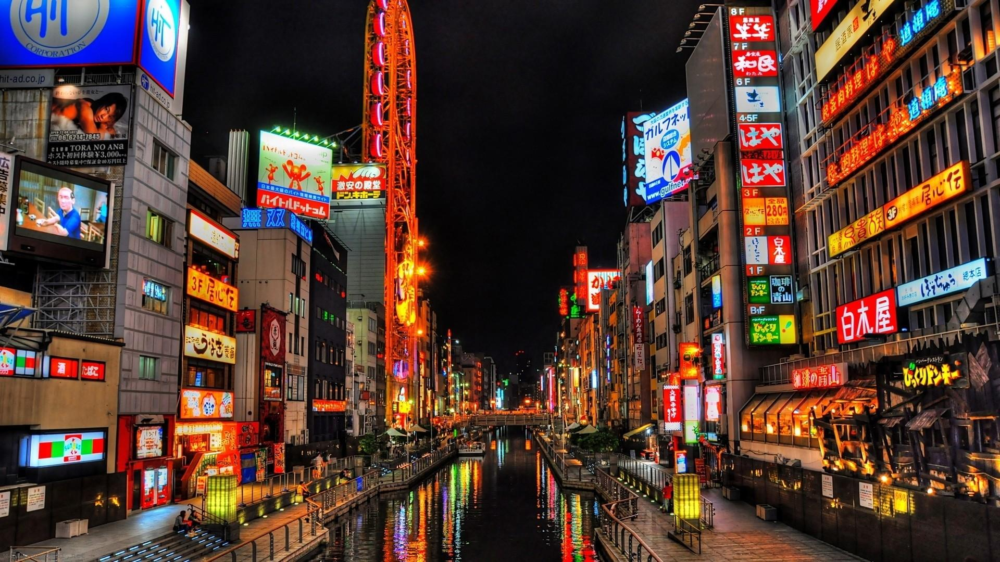

Historia de Osaka
A antiga Osaka
A história de Osaka data de 25.000 A.C., de quando ferramentas de pedra foram encontradas em escavações.
Você sabia que de 6 a 7 mil anos atrás, quase Osaka inteira era, na verdade, um oceano? A maior parte de
área, incluindo a atual cidade de Osaka, estavam no fundo do mar nesse tempo.
Em termos da história japonesa, o período em que Osaka foi a capital (período Miyako) foi mais longo que
o de Tóquio (período Edo).
De 794, quando a capital foi transferida para Heian-kyo, até 1868, quando o imperador se mudou para o
Palácio Imperial, Osaka e seus arredores foi a capital por aproximadamente 1.000 anos. (Sendo um nativo de
Kansai, sou um fã de Kansai!).
Como você provavelmente sabe, Osaka ficou conhecida como a “cozinha da nação” no início do período Edo,
após o reinado de Toyotomi Hideyoshi. Sakai, que era uma cidade industrial, tornou-se a Zona Industrial
Sakai-Senboku Waterfront, e os remanescentes da cidade mercantil ainda são vibrantes nos distritos
comerciais de Umeda e Honmachi, onde os comerciantes de Osaka de 2025 ainda prosperam!
Osaka, onde muitos Namban vieram para o Japão para comercializar e espalhar o cristianismo, agora
completou o Aeroporto Internacional de Kansai e continua a se desenvolver como uma porta de entrada para o
mundo, mas ainda mantém a atmosfera daqueles dias.
Alguns dos primeiros sinais de habitação na área aonde hoje se encontra Osaka foram encontrados no século
XIX que incluiam esqueletos humanos datados dos séculos V e VI a.C.; Acredita-se que o que é hoje a área
ocupada pela cidade consistiu em uma terra peninsular. Durante o período Yayoi, que se estendeu de 300
a.C. até 250 d.C., a habitação permanente nas planícies cresceu como o cultivo de arroz e cannabis. Por
volta de 500 d.C., durante o período Kofun, Osaka desenvolveu-se um importante porto que ligava a região à
parte ocidental do Japão.
Em 645 d.C., o Imperador Kōtoku construiu seu palácio, conhecido como Naniwa Nagara-Toyosaki, em Osaka,
tornando esta área da capital do império. O lugar que se tornou a cidade moderna foi por este tempo
chamado Naniwa. Este nome, e formas derivadas, estão ainda em uso para os distritos no centro de Osaka,
como Naniwa (浪 速) e Namba (难 波). Embora a capital foi transferida para Asuka (conhecida como Nara hoje) em
655 d.C., Osaka permaneceu um conexão vital, por terra e mar, entre a Yamato (hoje Prefeitura de Nara).

Osaka moderna
Futuro chega em Osaka
Osaka foi o centro industrial mais claramente definido no desenvolvimento do capitalismo no Japão, a
rápida industrialização atraiu muitos imigrantes coreanos. O sistema político era pluralista, com uma
forte ênfase na promoção da industrialização e modernização. A alfabetização e o sistema educacional
expandiram-se rapidamente, produzindo uma classe média com um gosto pela literatura e disponibilidade
para apoiar as artes.
Osaka, o segundo maior mercado exterior, depois de Tóquio, está experimentando um forte crescimento no
número de visitantes estrangeiros. Espera-se que o número de visitantes estrangeiros aumente no futuro
devido ao aumento de voos internacionais, novas rotas aéreas e à recente desvalorização do iene japonês.
Espera-se que o comportamento de consumo dos visitantes estrangeiros no Japão tenha um impacto positivo
na economia japonesa, especialmente em Osaka. Em 2025, a Expo de Osaka está programada para ser
realizada em Yumeshima, uma ilha artificial na Baía de Osaka, e 155 hectares dos 390 hectares (cerca de
100 vezes o tamanho do Parque Koshien) estão planejados como o local da exposição.
Tal como os seus homólogos europeus e americanos, Osaka possui favelas, desemprego e pobreza. No Japão,
foi aqui que um governo municipal introduziu pela primeira vez um sistema abrangente de assistência aos
pobres, copiados em parte a partir de modelos britânicos. Formuladores de políticas em Osaka salientaram
a importância da formação da família e da assistência mútua como a melhor maneira de combater a pobreza.
Isso minimizou o custo dos programas de bem-estar.
O monotrilho de Osaka opera duas linhas: a linha principal (21,2 km) do aeroporto de Osaka à cidade de
Kadoma via Senri-Chuo, e a linha Saito (6,8 km) de Banpaku-Kinen-Koen a Saito-Nishi, que se ramifica
para o norte.
O produto interno bruto da cidade de Osaka no ano fiscal de 2004 foi de 21,3 trilhões de ienes, um
aumento de 1,2% em relação ao ano anterior. O número representa cerca de 55% da produção total na
província de Osaka e 26,5% na região de Kinki. Em 2004, comércio, serviços e manufatura foram as três
principais indústrias, representando 30%, 26% e 11% do total, respectivamente. A renda per capita na
cidade era de cerca de 3,3 milhões de ienes, 10% superior à da prefeitura de Osaka.A MasterCard
classificou Osaka como o 19º lugar entre as principais cidades do mundo e desempenha um papel importante
na economia global.
O PIB na área maior de Osaka (Osaka e Kobe) é de 341 bilhões de dólares. Osaka, junto com Paris e
Londres, tem uma das hinterlândias mais produtivas do mundo.O PIB per capita de Osaka (nominal) foi de
59.958 dólares.